(Budapest, Zagreb, Ljubljana, Vienna, Bratislava & Prague)
(13 July 2025 to 20 July 2025)
We left home around 7 pm for the MSRTC bus stop. Luckily we got the bus immediately. We reached Chembur around 11 pm. From there we took an auto to the International Airport and reached there at midnight. A Kesari representative was waiting at the airport and from him we collected air tickets and some eatable packs.
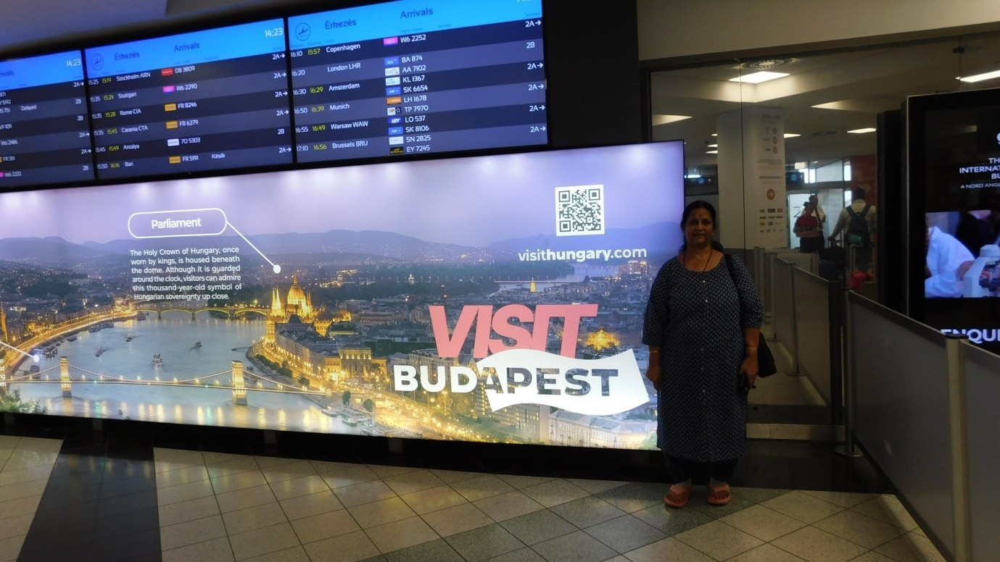
Tickets were from Mumbai to Doha (Qatar) and then from Doha to Budapest (Hungary). Indigo flight 6E1303 was at the right time. The flight departed at 4:20 am. The duration of the flight to Doha from Mumbai was about 3 hours. The plane crossed the Arabian Sea and Dubai and reached Doha at 5:45 am, local time. The connecting flight to Budapest was QR199 and the departure time was 9:20. The flight duration to Budapest from Doha is about 5 hours.
Tigris River was seen during the flight. The flight was about 20,000 ft above. The weather was quite hot. No clouds in between and from the window I could see clearly the ground; the entire stretch of Najaf, Baghdad, Erbil, Mosul, etc., were all desert without any greenery. In that barren landscape, the long Tigris River was seen throughout the flight. We know this river is the key source for agriculture even during the Mesopotamia civilization. After crossing Ankara, the plane started crossing the Black Sea. The blue-colored sea, a few tiny ships, and the beautiful shore was a spectacular view from the plane. Another rarest view I witnessed while flying: I saw another plane moving exactly in the opposite direction, below the plane in which we were traveling.
The pilot of our flight announced that the aircraft was landing. Since I occupied the window seat, I was looking at the runway. It came close to the runway and suddenly the flaps started extending and the plane started taking off, and after a minute the pilot said that the permission to land was denied and it would take another 10 minutes; he took a long circle and then landed. Probably another plane was being prepared to take off.
The airport was not very big, but clean and beautiful. Immigration didn't take much time. After that, we left the airport. The hired bus was at the parking place. The bus was too good; it was a big bus, but we were only 14. The travel to our hotel took an hour. The roads are not very broad, but they were good and clean. Traffic was less but the rules were adhered to religiously. Public transport facility is available. Users of two-wheelers are far less. The hotel name is Danubius. Actually, Danubius is the river of Hungary. The hotel room was good. After a light refreshment and bath, I went out for a walk. The city is clean and on both sides of the road, I didn't see any multi-storied buildings. All are old historical buildings. Still, that old heritage is maintained. We had our early dinner at an Indian Restaurant called Indigo. We finished our early dinner and returned back to the hotel. Here, sunset happens around 9:30 pm.
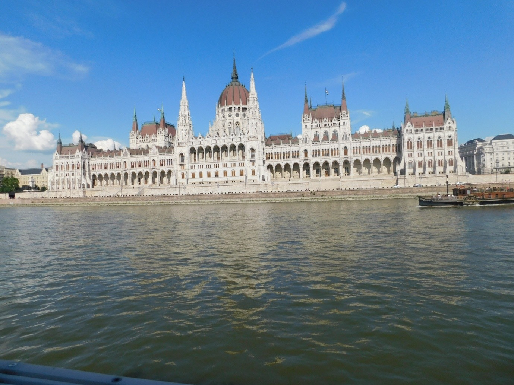
It is a beautiful country in Central Europe. The capital city is Budapest. The language spoken in this country is Hungarian, but English is also used widely. The currency of Hungary is the Hungarian Forint. Rs 500 is approximately equal to 120 HF. Hungary is predominantly a Catholic Christian Country. Danubius, Tisza, and Drava are the major rivers of Hungary.
This country was with the alliance of Germany in the First World War and Second World War. During the Hitler regime, he massacred all Jews of this country. After the Second World War, half of the country was taken away by the neighboring countries and this country came under the rule of Russia. The 40th President of the US, Ronald Reagan, helped to drive Russians from this country and Hungary got freedom. Budapest, the capital of this country, is a beautiful city.
In this country, sunrise is taking place early in the morning, so even at 5 am I could see the sunlight. Using the room kettle and instant coffee powder, I made coffee. By 8 am we got ready and reached the hotel lobby for breakfast. Being vegetarian, we could get only bread, butter, and fruits. I also drank fresh coffee with milk. We left the hotel around 9 am.
Originally there were two cities named Buda and Pest. These two cities were separated by the Danubius River. Now these two cities are merged together and called Budapest. From the hotel, it was about 15 minutes of travel to reach Budapest Castle. The bus was parked in the parking lot. We then walked to the castle. From there, we took a mini electric open bus to go around the castle area. We were dropped at Heroes' Square. We walked around that area. Then we went to Matthias Church. After the Church, we saw the Royal Palace, then Chain Bridge, and Parliament House. We went to all these places by walking only.
Then we went to an Indian Restaurant called Salaam Mumbai to have our lunch. After lunch, we proceeded to have cruise travel over the River Danubius. This cruise travel was an hour. On both sides of the river, all the Roman architecture buildings and churches looked beautiful. After the cruise travel, we went to a Hungarian hotel and enjoyed a musical cultural show along with Hungarian food. They served a kind of soup with pasta. Then we returned back to the hotel.
This river originates in the Black Forest, Germany, and flows through ten countries, ending in Romania and merging into the Black Sea. The total length of this river is 2,860 kilometers. In Budapest, this river splits and again joins together, thereby making a small island called Margaret Island.
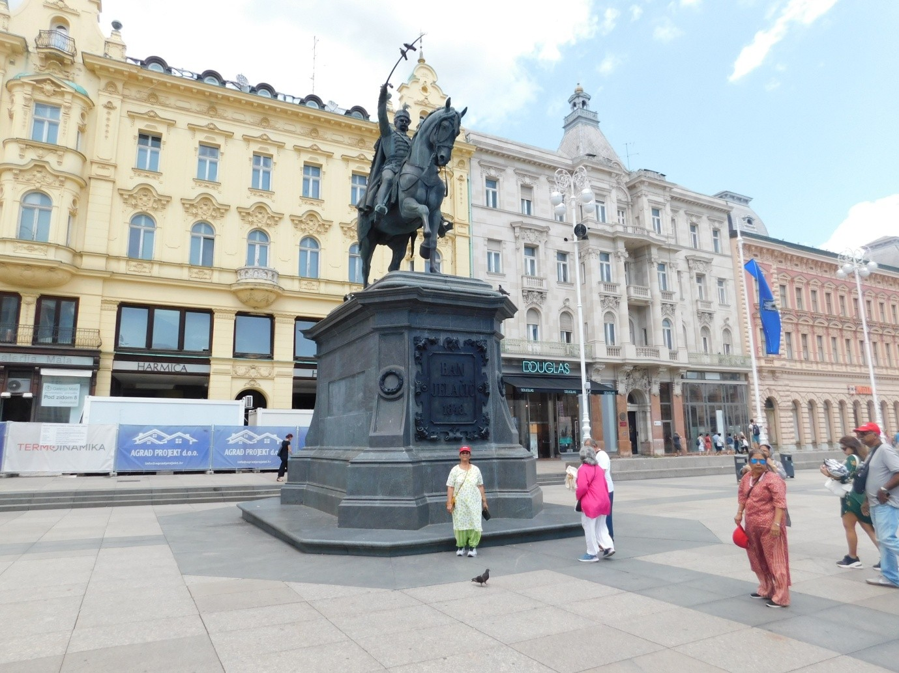
We got up around 5 am. At 7 am we had our continental breakfast. By 8 am we left Budapest and proceeded to Zagreb, the capital of Croatia. It is 350 km away. The highway was quite good and had less traffic, so travel was comfortable. This 350 km stretch is full of greenery with tall trees and mountains. After 2 hours of travel, we had a coffee break for 30 minutes.
Croatia Republic is a beautiful country in Central Europe. This country is bounded by the Adriatic Sea. The water color is an amazing green. Slovenia is its neighboring country. Even though Croatian is the official language, English is also widely used. Zagreb is the capital city. Monuments, old churches, and natural beauty are the specialties of this city. The weather is very pleasant throughout the year. Croatia was a part of Yugoslavia till 1991. In 1991, the Croatia Republic got total independence from Yugoslavia. It is a small country and the population is only 35 lakhs.
By 11 am we started again to travel. At 11:30 we crossed Hungary and entered Croatia. In between these two countries, there is no check post or border security. We reached Zagreb around 1 pm. The bus was parked at a designated place. From there we walked about 20 minutes to an Indian restaurant called Taste of India. We had our lunch there. After lunch, we walked to Ban Jelačić Square, the center of the city. We roamed around this square for 30 minutes and took a tram to the parking place. We started around 3 pm towards Ljubljana, the capital of Slovenia. It is 150 km from Croatia.
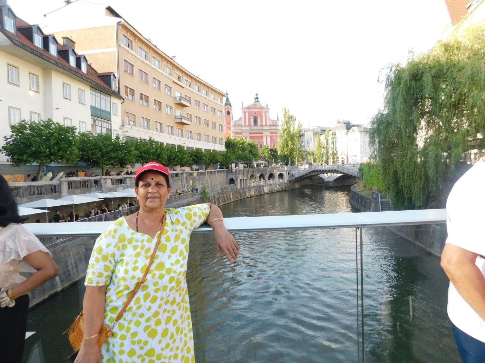
The Republic of Slovenia is a country in Central Europe. Italy, Hungary, and Austria are the neighboring countries. Slovene is the national language of this country, but the majority of people understand English. The majority of people are Christians. Next to Christians, Muslims are more numerous here. Ljubljana is the capital city of Slovenia.
Around 5 pm we reached Ljubljana and the local guide was waiting for us for an orientation walk tour around the city. Along with her, we visited the Triple Bridges over the river Ljubljanica. Then we went to the central market, an open-air market selling various fancy items on the roadside. Then we went to Dragon Bridge, another old bridge on this river. While walking, a drunkard gave trouble to our lady guide. She called the police, but fortunately, nothing serious happened. All these bridges belong to the 18th and 19th centuries.
Also, we visited St. Nicholas Church. The 19th-century bronze door was attractive. In the town hall area, we saw many bars. In these Central European countries, we observe most people, ladies as well as gents, are smokers. Constantly they smoke and pollute the beautiful natural environment. Then we went to the Namaste Ljubljana hotel, an Indian restaurant. After dinner, we were accommodated in the M Hotel of Ljubljana.
After breakfast at the M Hotel, around 9 am we vacated the hotel and proceeded to Bled. It took an hour to reach Bled Lake. The blue water lake looks beautiful. The circumference is around 6 km. The depth of this lake is around 30 feet. To protect the lake water purity, only manual boats are operated. During winter, the whole lake will be frozen. We went by a boat to Bled Island. There is a church on the island. The church is beautiful and the name of the church is Queen Mary. The church was constructed in the 16th century. It is assumed that all the materials required to build this church on this island must have been taken by small boats. There is a very big bell and it is believed that by ringing this bell 3 times, wishes will get fulfilled. We both rang this bell 3 times. From the island, we returned by the same boat and proceeded to Bled Castle by bus.
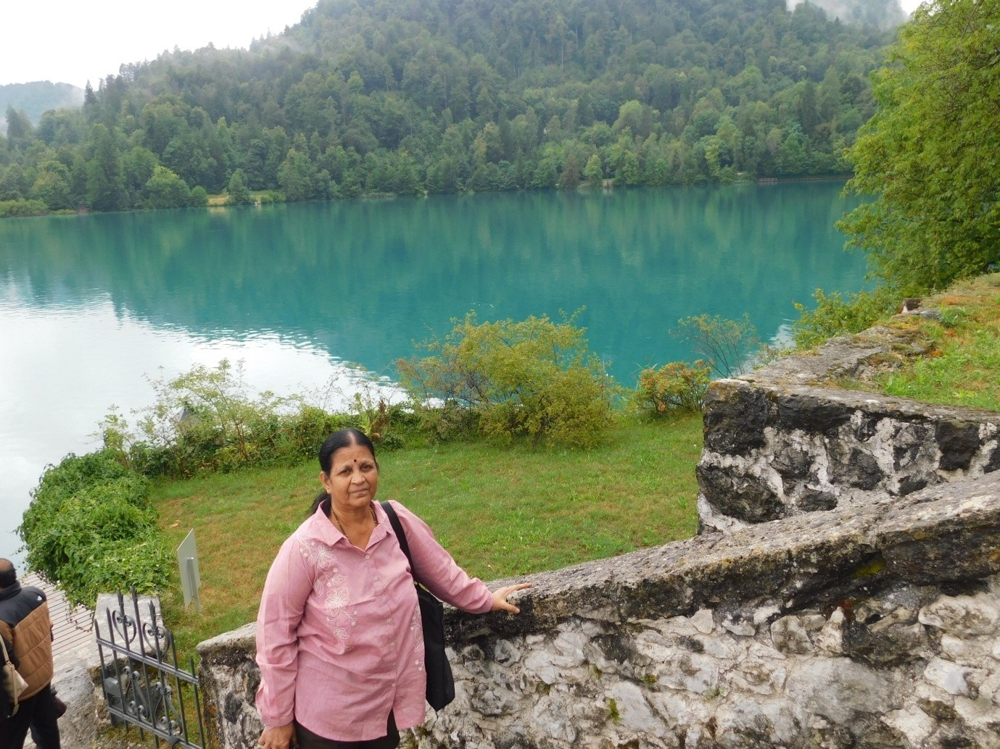
It was built in the 11th century and renovated in the 20th century without any big alterations. This castle was initially occupied by bishops. To reach this castle we have to climb about 100 steps, which takes about 30 minutes. The castle is built over the hill and below is Lake Bled. The lake and its surroundings look spectacular if we see from the castle. This is the most attractive tourist spot in Ljubljana.
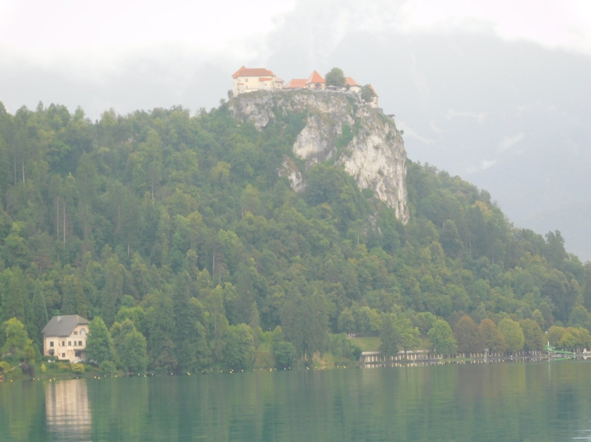
After the visit to the castle, we returned back to the hill base and went to Pizza Hut. For lunch, we had pizza and finger chips. Around 2 pm we left Bled and proceeded to Vienna, Austria. It is 375 km from Slovenia and about 5 hours of travel including a 30-minute break. Both sides of the highway were full of greenery, tall trees, and mountains. This highway has a few long tunnels. We reached Vienna around 8:15 pm. Since the driving time of the driver had almost ended, we could not go to an Indian restaurant. Indian food was ordered and we took dinner in our room.
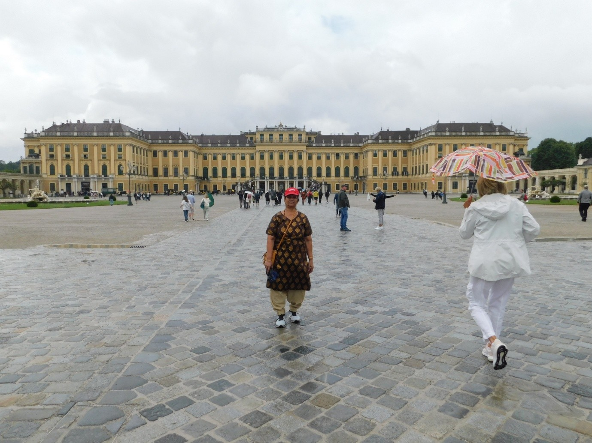
Austria is in Central Europe. This country is close to Germany. The official language is German. The capital of this country is Vienna (Vina). The currency is the Euro. It is a landlocked country, so there is no harbor or seashore. Border countries are the Czech Republic, Germany, Hungary, Italy, Liechtenstein, Slovakia, Slovenia, and Switzerland. Lake Constance is the biggest lake of this country (shared with Switzerland and Germany). The Danube (Donau) is the river shared with Germany, Hungary, Croatia, Ukraine, and Romania. Landslides and earthquakes are common natural hazards of this country. The majority of people are Roman Catholic. Most people here speak English. Vienna, Innsbruck, Linz, and Graz are the popular cities.
After breakfast, by 9:30 we left the hotel and proceeded to Schonbrunn Palace. The total number of rooms in that palace is 1,400. Only 45 rooms are kept open for visitors. In this palace, they won't allow bags or umbrellas. Only small bags of A4 size are allowed. While entering, they provide a microphone device, and when you press the room number, a recorded description of the things kept in that place is narrated. Schonbrunn is a royal family having a large number of family members. This palace belongs to the 16th century and was the summer palace of the Habsburg rulers of Austria. Beautiful wall paintings, royally decorated furniture, portraits of royal family members, silver vessels, etc., are seen in this palace. Now it is a UNESCO World Heritage site.
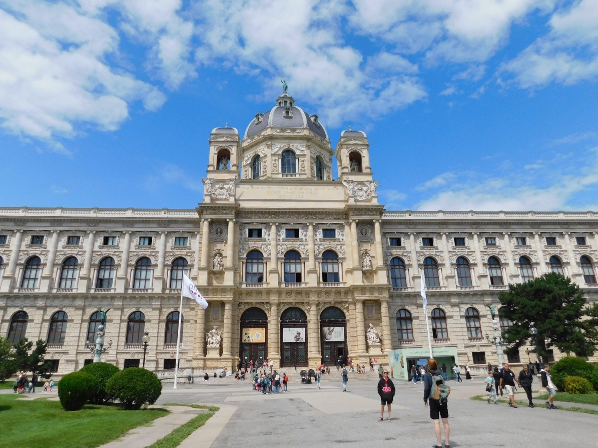
We spent about an hour here. Then we walked around this city and saw the State Opera House, the Parliament, City Hall, a beautiful rose garden, Burg German Theater, and churches. After the walking tour, we had our lunch at an Indian Restaurant. Some of our group members went shopping, but we preferred to return back to the hotel. The population of this country is only 80 lakhs. Roads are clean. In the city roads, separate lanes are provided for cyclists. Trams and buses are there. People use these public transports very much, so fewer car movements are seen. The government collects heavy taxes and provides free education, free healthcare, and substantial old-age pensions. We came across a few Indians and they said admission to schools and colleges is much easier, and after education, abundant job opportunities are there and a tension-free life. Evening around 6:45 we went by bus to an Indian restaurant. The food was good. We returned back to the hotel around 8 pm.
Since we had to move from Vienna and reach Prague before night, we got up early and got ready to take breakfast around 7. From Vienna, Prague is 375 km. On our way, we wanted to visit 2 places: Bratislava, the capital of Slovakia, and then the Bone Church at Kutna Hora, a city in the Czech Republic. Prague is the capital of the Czech Republic. After the usual breakfast of bread and butter and coffee, we left the hotel by 8 am. The weather was a bit chilly. It took about 20 minutes to catch the highway. The highway was too good. Both sides of the highway were fertile lands. Mostly they cultivate wheat and some lands were completely covered with sunflower plants with beautiful bright yellow sunflowers.
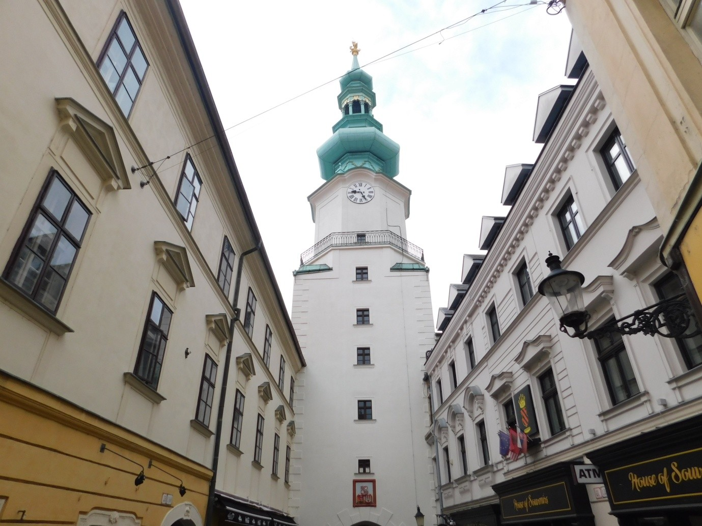
In between the agricultural lands, there were lots of windmills to generate electricity. These European countries are claiming they are rich and giving free healthcare, free education, pensions, etc., but I don't understand why they collect 1 euro (about Rs 100/-) to use the washroom. On the highway, gas stations and supermarkets have washrooms, but we have to pay and use them. I took 50 euros by paying Rs 5,200/- from a local money exchanger before coming to Europe. A major part of this money was spent on washrooms only.
This country is called the Slovak Republic. It is in Central Europe. It is surrounded by Poland, Hungary, Austria, and Ukraine. The capital city is Bratislava. Around 9:30 we reached Bratislava and a local guide was waiting for us. We walked through the old town of Bratislava and saw the historical buildings. We saw Saint Martin's Cathedral and then went to the castle and museum. From the castle, we could see the big Danubius River and bridges over the river. Around 11 we boarded the bus and on the way, we collected packed lunch. About 1 o'clock the bus was halted at a gas station and we had our lunch. After lunch, we proceeded to the Kutna Hora Bone Church. In this place in the 12th century, a cathedral was created along with a church. For this, sacred sand was brought from Jerusalem and spread. During the plague, a large number of people died and creating new graveyards posed more problems, forcing people to use the same cathedral. During that time, skeletons collected from the cathedral were kept in this church and later on, using the bones with silver wires, the church was decorated. So it is called the bone church. We reached Kutna Hora around 4:30. With a local tour guide, we went to the Bone Church. Boards were displayed there not to photograph, but people were taking photos. The whole church was decorated by skeletons and skulls. Large amounts of silver stands and wires were used to support the skulls and skeletons. We visited another church constructed in the 12th century which was in the same locality. We reached Prague around 7 and had dinner at an Indian restaurant. Checked into the NH Hotel, Prague. The hotel is too good.
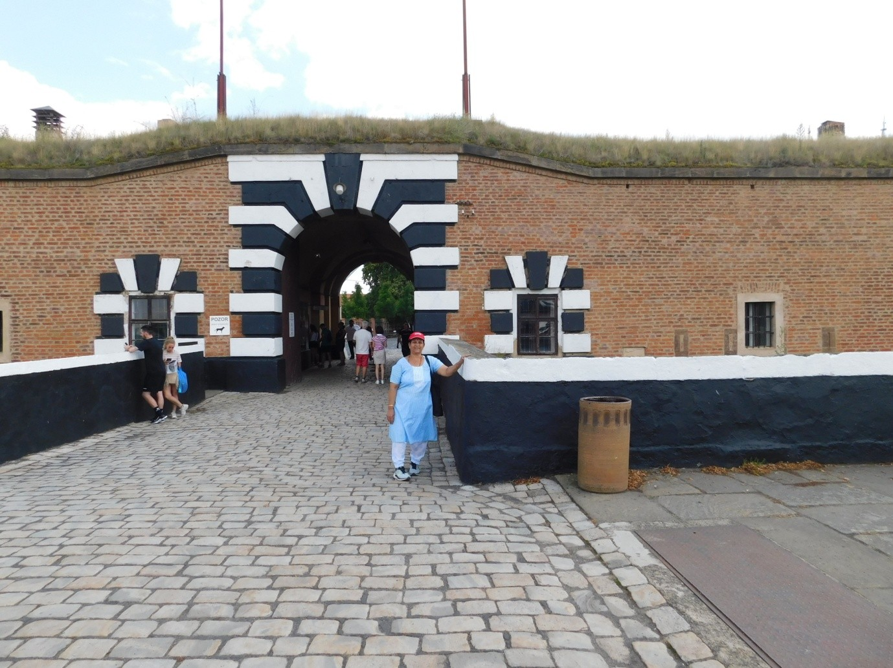
The Czech Republic is a landlocked country in Central Europe. The capital is Prague. The official language is Czech. The currency is the Czech Koruna. The majority of people don't follow any religion. It is a developed rich country. The country offers free education and free healthcare to its citizens. We left the NH Hotel after our breakfast around 9 am. Terezin Camp is a 30 km travel from the city. Terezin Concentration Camp. During the Second World War, these European countries were in alliance with Germany. In 1780, this fortress was constructed by Habsburg Emperor Joseph II in the name of his mother Maria Theresa. During the Second World War, this fortress was converted to a concentration camp by the Nazis to imprison Jews from countries like Yugoslavia. A total of 140,000 Jews were kept in this prison, including children.
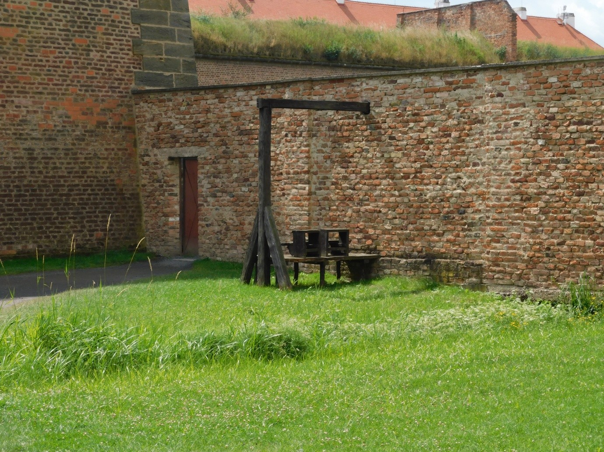
From this camp, Jews were taken to extermination camps for mass killing. In this prison, about 40,000 Jews died because of malnourishment and various diseases. After the suicide of Hitler and the defeat of Germany, Russia invaded and released the leftover prisoners. Then we proceeded to Prague Castle. This is a one-thousand-year-old castle. Beautiful paintings are also there. Then we took our lunch at an Indian hotel. We started walking around this city. We walked about 6 km. We went through the city, crossing over bridges of the famous Vltava River (Vitava). Also, we saw St. Nicholas Church, a beautiful and very big church with lots of beautiful paintings and colorful glass windows. Then we walked to the Town Hall and reached the famous Astronomical Clock tower about 5 minutes before 6 o'clock. At 6 o'clock a window opened and a group of figures in different costumes started playing different musical instruments. And another figure appeared with a bell in his hand and swung it 6 times. The tower clock functions were amazing. Then we stopped at the Palladium Mall. Some people did some shopping. Then we proceeded to the bus parking place and by bus reached an Indian restaurant and had our delicious dinner and returned back to the hotel around 9 pm.
Today is the last day of the tour. We left the hotel around 11 am. On the way to Prague International Airport, we took lunch at an Indian Restaurant. We reached the airport around 2:30. Flight QR 292 to Doha was at the right time. Flight travel to Doha is about 5 hrs 30 minutes. The flight reached Doha at the right time. Our onward flight to Mumbai departed at 2 am and reached Mumbai at 8:30 am. It was raining heavily. After immigration, we collected our baggage and took an auto to Maitri Park Mumbai and took an MSRTC bus to Pune and arrived in Pune around 1 pm. We landed home safely and the whole trip was enjoyable.
| Date | Country | City | Places visited |
|---|---|---|---|
| 13/07/25 & 14/07/25 | Hungary | Budapest | Budapest Castle, Matthias Church, Royal Palace, Chain Bridge, Parliament House, city tour. |
| 15/07/25 | Croatia | Zagreb | Ban Jelačić Square |
| 15/07/25 | Slovenia | Ljubljana | Walk tour: Triple bridge over the river Ljubljanica, central market, Dragon bridge, St. Nicholas Church. |
| 16/07/25 | Slovenia | Bled island | Bled lake and Bled castle |
| 17/07/25 | Austria | Vienna | Schonbrunn Palace, State Opera House, Parliament, City Hall, Burg German Theater |
| 18/07/25 | Slovakia | Bratislava | Saint Martin's Cathedral, Castle museum |
| 18/07/25 | Czech Republic | Kutna Hora | Bone Church |
| 19/07/25 | Czech Republic | Prague | Terezin concentration Camp, Prague Castle, Vltava River, Astronomical clock tower. |
Total Countries: 6 (Hungary, Croatia, Slovenia, Austria, Slovakia, Czech Republic)
Major Rivers: Danubius (Danube), Tigris (viewed from air), Vltava, Ljubljanica
Key Landmarks: Schönbrunn Palace, Bled Castle, Prague Astronomical Clock
Road Distance: Approx. 1,700+ km covered via luxury coach
Currencies Used: Euro, Hungarian Forint, Czech Koruna
Favorite Cuisines: Indian (Indigo, Salaam Mumbai, Taste of India, Namaste Ljubljana)